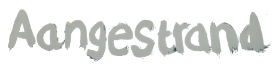

Aangestrand is een jong festival op schiermonnikoog. Alle leeftijden komen erop af. Live-acts in de middag en dj's sluiten de prachtige zomeravond op het eiland af. In deze video wilde ik alle facetten van dit festival laten zien in een enorm korte tijd. Strand, schiermonnikoog, muziek en feest. Niet meer en al helemaal niet minder.